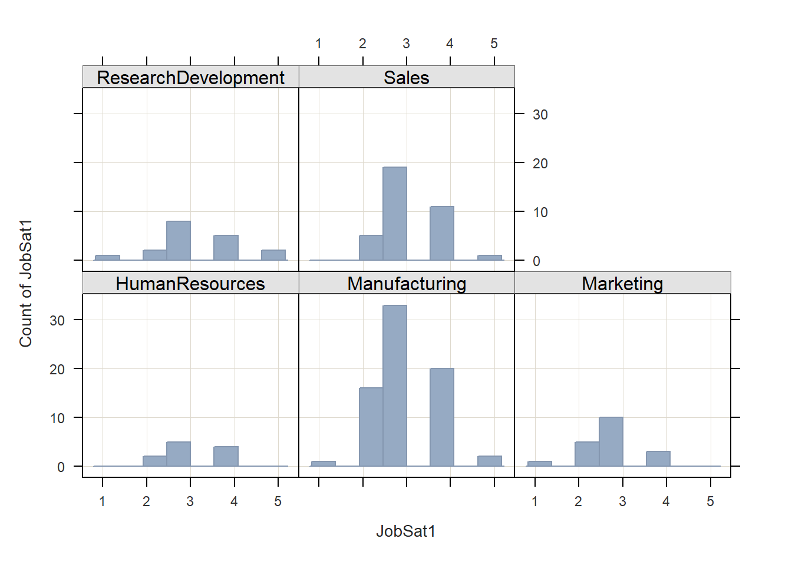

Chapter 28 Aggregating & Segmenting Employee Survey Data
In this chapter, we will learn how to aggregate and segment data from an employee survey. Respectively, these two processes allow us to examine data at a higher level of analysis and to examine data by group or cluster.
28.1 Conceptual Overview
Aggregation refers to the process of reporting data at a higher level of analysis, where level of analyses might include teams, units, facilities, locations, or organization levels. In many instances, we report aggregate results (e.g., mean, standard deviation, counts) based on an entire sample drawn from a larger population; however, in some instances, we might wish to create a new variable within a data frame that represents descriptive (i.e., summary) statistics for a clusters of cases (e.g., teams of employees), as we might be interested in understanding subsamples. In other instances, we might aggregate data to a higher level of analysis because we are interested in analyzing associations or differences at that higher level. For example, we might aggregate employees engagement scores to the unit level in order to analyze whether significant differences in unit-level employee engagement exist.
Sometimes the process of summarizing a variable by groups is referred to as segmentation. For example, after acquiring performance data for employees, we may wish to create a new variable that represents the average (i.e., mean) level of performance for each work teams employees. It is important to note that aggregation does not always imply measures of central tendency like the mean, median, or mode; rather, we can summarize clusters of data in other ways, such as by the minimum or maximum value within a cluster of cases (e.g., performance of worst performing team member), the number of cases within a cluster (e.g., number of members of a team), or the dispersion (i.e., spread) of variable values for each cluster (e.g., standard deviation of performance values for members of a team). In terms of measurement scale, a grouping variable will typically be nominal or ordinal (i.e., categorical).
28.2 Tutorial
This chapters tutorial demonstrates how to aggregate and segment employee survey data in R.
28.2.1 Video Tutorial
As usual, you have the choice to follow along with the written tutorial in this chapter or to watch the video tutorial below.
Link to video tutorial: https://youtu.be/EdfeRpQtF20
28.2.2 Functions & Packages Introduced
| Function | Package |
|---|---|
group_by |
dplyr |
summarize |
dplyr |
n |
dplyr |
n_distinct |
dplyr |
mean |
base R |
sd |
base R |
median |
base R |
var |
base R |
min |
base R |
max |
base R |
mutate |
dplyr |
ungroup |
dplyr |
str |
base R |
as.data.frame |
base R |
Histogram |
lessR |
BarChart |
dplyr |
28.2.3 Initial Steps
If you havent already, save the file called EmployeeSurveyData.csv into a folder that you will subsequently set as your working directory. Your working directory will likely be different than the one shown below (i.e., "H:/RWorkshop"). As a reminder, you can access all of the data files referenced in this book by downloading them as a compressed (zipped) folder from the my GitHub site: https://github.com/davidcaughlin/R-Tutorial-Data-Files; once youve followed the link to GitHub, just click Code (or Download) followed by Download ZIP, which will download all of the data files referenced in this book. For the sake of parsimony, I recommend downloading all of the data files into the same folder on your computer, which will allow you to set that same folder as your working directory for each of the chapters in this book.
Next, using the setwd function, set your working directory to the folder in which you saved the data file for this chapter. Alternatively, you can manually set your working directory folder in your drop-down menus by going to Session > Set Working Directory > Choose Directory. Be sure to create a new R script file (.R) or update an existing R script file so that you can save your script and annotations. If you need refreshers on how to set your working directory and how to create and save an R script, please refer to Setting a Working Directory and Creating & Saving an R Script.
# Set your working directory
setwd("H:/RWorkshop")Next, read in the .csv data file called EmployeeSurveyData.csv using your choice of read function. In this example, I use the read_csv function from the readr package (Wickham, Hester, and Bryan 2021). If you choose to use the read_csv function, be sure that you have installed and accessed the readr package using the install.packages and library functions. Note: You dont need to install a package every time you wish to access it; in general, I would recommend updating a package installation once ever 1-3 months. For refreshers on installing packages and reading data into R, please refer to Packages and Reading Data into R.
# Install readr package if you haven't already
# [Note: You don't need to install a package every
# time you wish to access it]
install.packages("readr")# Access readr package
library(readr)
# Read data and name data frame (tibble) object
EmpSurvData <- read_csv("EmployeeSurveyData.csv")## Rows: 156 Columns: 19## -- Column specification ------------------------------------------------------------------------------------------------------------------------
## Delimiter: ","
## chr (3): EmployeeID, Unit, Supervisor
## dbl (16): JobSat1, JobSat2, JobSat3, TurnInt1, TurnInt2, TurnInt3, Engage1, Engage2, Engage3, Engage4, Engage5, ExpIncivil1, ExpIncivil2, Ex...##
## i Use `spec()` to retrieve the full column specification for this data.
## i Specify the column types or set `show_col_types = FALSE` to quiet this message.# Print the names of the variables in the data frame (tibble) object
names(EmpSurvData)## [1] "EmployeeID" "Unit" "Supervisor" "JobSat1" "JobSat2" "JobSat3" "TurnInt1" "TurnInt2" "TurnInt3" "Engage1"
## [11] "Engage2" "Engage3" "Engage4" "Engage5" "ExpIncivil1" "ExpIncivil2" "ExpIncivil3" "ExpIncivil4" "ExpIncivil5"# Print number of rows in data frame (tibble) object
nrow(EmpSurvData)## [1] 156# Print top 6 rows of data frame (tibble) object
head(EmpSurvData)## # A tibble: 6 x 19
## EmployeeID Unit Supervisor JobSat1 JobSat2 JobSat3 TurnInt1 TurnInt2 TurnInt3 Engage1 Engage2 Engage3 Engage4 Engage5 ExpIncivil1 ExpIncivil2
## <chr> <chr> <chr> <dbl> <dbl> <dbl> <dbl> <dbl> <dbl> <dbl> <dbl> <dbl> <dbl> <dbl> <dbl> <dbl>
## 1 EID294 Mark~ EID373 3 3 3 3 3 3 2 1 2 2 3 2 2
## 2 EID295 Mark~ EID373 2 3 2 3 4 2 2 1 3 3 3 2 2
## 3 EID296 Mark~ EID373 2 2 3 3 3 3 1 1 2 1 2 2 1
## 4 EID301 Mark~ EID367 2 2 3 4 4 4 3 2 3 2 2 3 3
## 5 EID306 Mark~ EID367 2 2 2 4 4 4 3 2 3 4 3 2 3
## 6 EID213 Huma~ EID370 4 3 4 3 3 3 3 2 4 3 3 2 3
## # ... with 3 more variables: ExpIncivil3 <dbl>, ExpIncivil4 <dbl>, ExpIncivil5 <dbl>The data for this exercise include employees unique identifiers (EmployeeID), the unit they work in (unit), their direct supervisor (Supervisor), and annual employee survey responses to three job satisfaction items (JobSat1, JobSat2_rev, JobSat3), three turnover intentions items (TurnInt1, TurnInt2, TurnInt3), five engagement items (Engage1, Engage2, Engage3, Engage4, Engage5), and five exposure to incivility items (ExpIncivil1, ExpIncivil2, ExpIncivil3, ExpIncivil4, ExpIncivil5_rev). All response scales are 5 points, ranging from strongly disagree (1) to strongly agree (5).
28.2.4 Counts By Group
Lets begin by learning how to summarize data in aggregate. When we dont have any grouping variables of interest, we can simply compute descriptive statistics, such as the mean, standard deviation, or count for each variable of interest, and this will compute the descriptive statistics at the sample level. For our purposes, however, we will summarize data in accordance with a grouping (i.e., clustering) variable, which will yield aggregate estimates for each group. Specifically, we will summarize how many employees (who responded to the engagement survey) work in each unit.
To do so, we will use the group_by, summarize, n, and n_distinct functions from the dplyr package (Wickham et al. 2021), so if you havent already, be sure to install and access that package before proceeding.
# Install dplyr package if not already installed
install.packages("dplyr")# Access dplyr package
library(dplyr)I will demonstrate two approaches for applying the group_by, summarize, n, and n_distinct functions from dplyr. The first option uses pipe(s), which in R is represented by the %>% operator. The pipe operator comes from a package called magrittr (Bache and Wickham 2020), on which the dplyr is partially dependent. In short, a pipe allows one to code more efficiently and to improve the readability of an overall script under certain conditions. Specifically, a pipe forwards the result or value of one object or expression to a subsequent function. In doing so, one can avoid writing functions in which other functions are nested parenthetically. The second option is more traditional and lacks the efficiency and readability of pipes. You can use either approach, and if dont you want to use pipes, skip to the section below called Without Pipes. For more information on the pipe operator, check out this link.
28.2.4.1 With Pipes
Well begin by using an approach with the pipe (%>%) operator.
- Type the name of our data frame object, which we previously named
EmpSurvData, followed by the pipe (%>%) operator. This will pipe our data frame into the subsequent function. - Either on the same line or on the next line, type the name of the
group_byfunction, and within the parentheses, typeUnitas the argument to indicate that we want to group the data by the organizational unit membership variable. Follow this function with another pipe (%>%) operator in order to pipe the results of thegroup_byfunction to the subsequent function. - Type the
summarizefunction, and within the parentheses, type a new name (of your choosing) for a variable that will contain the number (count) of employees within each organizational unit (UnitCount), and follow that with the=operator and an emptynfunction (i.e., nothing typed in the parentheses). Thesummarizefunction is most commonly used to describe/summarize data in some way (e.g., counts) that has been aggregated by thegroup_byfunction. Thenfunction can be used within thesummarizefunction to count the number of cases per group. - Finally, type another pipe (
%>%) operator, followed by the functionungroup()(with no arguments in the parentheses); its good to get in the habit of ungrouping the data, particularly if you want to subsequently look at the data without grouping applied.
# Counts by groups - n function (with pipes)
EmpSurvData %>%
group_by(Unit) %>%
summarize(UnitCount = n()) %>%
ungroup()## # A tibble: 5 x 2
## Unit UnitCount
## <chr> <int>
## 1 HumanResources 11
## 2 Manufacturing 72
## 3 Marketing 19
## 4 ResearchDevelopment 18
## 5 Sales 36Of note, we could arrive at the same output by using the n_distinct function instead of the n function. The n_distinct function quickly counts the number of unique values (e.g., EID294, EID295) in a variable (e.g., EmployeeID), and when preceded by the group_by function, it counts the number of unique values within each group. The n_distinct function is really handy when unique entities (e.g., employees) each have multiple rows of data, which (depending on how your data are structured) could be the case if you were to have a long-format data frame containing multiple survey administrations for employees over time. Using the function can reveal how many unique employees there are, even when some employees have multiple rows of data. In sum, the n function counts the number of cases (i.e., rows), and the n_distinct function counts the number of unique values.
# Counts by groups - n_distinct function (with pipes)
EmpSurvData %>%
group_by(Unit) %>%
summarize(UnitCount = n_distinct(EmployeeID)) %>%
ungroup()## # A tibble: 5 x 2
## Unit UnitCount
## <chr> <int>
## 1 HumanResources 11
## 2 Manufacturing 72
## 3 Marketing 19
## 4 ResearchDevelopment 18
## 5 Sales 36If we wish to summarize by two or more grouping variables, then we just need to add those additional grouping variables to the group_by function. For example, using the same code from above, lets add the Supervisor nominal variable as a second argument to the group_by function.
# Counts by two groups - n_distinct function (with pipes)
EmpSurvData %>%
group_by(Unit, Supervisor) %>%
summarize(UnitCount = n_distinct(EmployeeID)) %>%
ungroup()## `summarise()` has grouped output by 'Unit'. You can override using the `.groups` argument.## # A tibble: 16 x 3
## Unit Supervisor UnitCount
## <chr> <chr> <int>
## 1 HumanResources EID370 10
## 2 HumanResources EID379 1
## 3 Manufacturing EID368 17
## 4 Manufacturing EID369 1
## 5 Manufacturing EID371 7
## 6 Manufacturing EID375 6
## 7 Manufacturing EID380 19
## 8 Manufacturing EID381 1
## 9 Manufacturing EID382 21
## 10 Marketing EID367 10
## 11 Marketing EID373 9
## 12 ResearchDevelopment EID372 18
## 13 Sales EID372 19
## 14 Sales EID374 3
## 15 Sales EID376 11
## 16 Sales EID377 328.2.4.2 Without Pipes
We can achieve the same output as above without using the pipe (%>%) operator.
- To begin, type the name of the
summarizefunction. - As the first argument within the
summarizefunction, insert thegroup_byfunction with the name of our data frame (EmpSurvData) as the first argument and the name of the grouping variable as the second argument (Unit). Doing this informs thesummarizefunction that the cases of interest is grouped by membership in theUnitvariable. - As the second argument within the
summarizefunction, type a new name for a variable that will contain the number (count) of employees within each organizational unit (UnitCount), and follow that with the=operator and an emptynfunction (i.e., nothing typed in the parentheses).
# Counts by groups - n function (without pipes)
summarize(group_by(EmpSurvData, Unit), UnitCount = n())## # A tibble: 5 x 2
## Unit UnitCount
## <chr> <int>
## 1 HumanResources 11
## 2 Manufacturing 72
## 3 Marketing 19
## 4 ResearchDevelopment 18
## 5 Sales 36In a similar fashion, we can apply the n_distinct function without pipes.
# Counts by groups - n_distinct function (without pipes)
summarize(group_by(EmpSurvData, Unit), UnitCount = n_distinct(EmployeeID))## # A tibble: 5 x 2
## Unit UnitCount
## <chr> <int>
## 1 HumanResources 11
## 2 Manufacturing 72
## 3 Marketing 19
## 4 ResearchDevelopment 18
## 5 Sales 36To summarize by two or more grouping variables, we can simply add additional grouping variables to the group_by function. As shown below, I add the Supervisor nominal variable as a third argument in the group_by function.
# Counts by two groups - n_distinct function (without pipes)
summarize(group_by(EmpSurvData, Unit, Supervisor), UnitCount = n_distinct(EmployeeID))## `summarise()` has grouped output by 'Unit'. You can override using the `.groups` argument.## # A tibble: 16 x 3
## # Groups: Unit [5]
## Unit Supervisor UnitCount
## <chr> <chr> <int>
## 1 HumanResources EID370 10
## 2 HumanResources EID379 1
## 3 Manufacturing EID368 17
## 4 Manufacturing EID369 1
## 5 Manufacturing EID371 7
## 6 Manufacturing EID375 6
## 7 Manufacturing EID380 19
## 8 Manufacturing EID381 1
## 9 Manufacturing EID382 21
## 10 Marketing EID367 10
## 11 Marketing EID373 9
## 12 ResearchDevelopment EID372 18
## 13 Sales EID372 19
## 14 Sales EID374 3
## 15 Sales EID376 11
## 16 Sales EID377 328.2.5 Measures of Central Tendency and Dispersion By Group
We can also aggregate data by computing the average of a variable for each group. Because measures of central tendency (e.g., mean, median) and dispersion (e.g., standard deviation, interquartile range) are estimated for continuous variables (i.e., variables with interval or ratio measurement scale), we will choose continuous variables that we wish to summarize in aggregate. For the sake of illustration, we will treat the JobSat1 and JobSat2 variables as having an interval measurement scale even though they would best be described as having an ordinal measurement scale; for a review of measurement scales, please refer to this section from a previous chapter. Further, we will use organizational unit (Unit) as our grouping variable. Well learn two approaches for aggregating data by computing the group average of a variable: with the pipe (%>%) operator and without the pipe (%>%) operator.
28.2.5.1 With Pipes
Lets begin by calculating the mean of JobSat1 for each value of the Unit variable using the pipe (%>%) operator.
- Type the name of the data frame, which we previously named
EmpSurvData, followed by the pipe (%>%) operator. - Type the name of the
group_byfunction, and within the function parentheses, typeUnitas the sole argument to indicate that we want to group the data by the organizational unit membership variable. Follow this function with another pipe (%>%) operator. - Type the name of the
summarizefunction, and within the parentheses, type a new name (of your choosing) for a variable that will contain the the meanJobSat1score for each organizational unit (Mean_JobSat1), and follow that with the=operator. After the=operator, type the name of themeanfunction from base R, and within it, type the name of our variable of interest (JobSat1) as the first argument; as the second argument, typena.rm=TRUE, which instructs R to exclude missing values forJobSat1when computing the mean.
# Means by group (with pipes)
EmpSurvData %>%
group_by(Unit) %>%
summarize(Mean_JobSat1 = mean(JobSat1, na.rm=TRUE))## # A tibble: 5 x 2
## Unit Mean_JobSat1
## <chr> <dbl>
## 1 HumanResources 3.18
## 2 Manufacturing 3.08
## 3 Marketing 2.79
## 4 ResearchDevelopment 3.28
## 5 Sales 3.22We can extend our code by estimating the unit-level means and standard deviations for JobSat1 and JobSat2 variables by using the mean and sd base R functions.
# Means & SDs by group (with pipes)
EmpSurvData %>%
group_by(Unit) %>%
summarize(
Mean_JobSat1 = mean(JobSat1, na.rm=TRUE),
SD_JobSat1 = sd(JobSat1, na.rm=TRUE),
Mean_JobSat2 = mean(JobSat2, na.rm=TRUE),
SD_JobSat2 = sd(JobSat2, na.rm=TRUE)
)## # A tibble: 5 x 5
## Unit Mean_JobSat1 SD_JobSat1 Mean_JobSat2 SD_JobSat2
## <chr> <dbl> <dbl> <dbl> <dbl>
## 1 HumanResources 3.18 0.751 3 0.447
## 2 Manufacturing 3.08 0.818 3.32 0.819
## 3 Marketing 2.79 0.787 2.89 0.737
## 4 ResearchDevelopment 3.28 1.02 3.17 0.924
## 5 Sales 3.22 0.722 3.36 0.723In addition to the mean and sd functions from base R, we can also apply the base R functions for median (median), variance (var), minimum (min), maximum (max), and interquartile range (IQR).
# Multiple descriptive statistics by group (with pipes)
EmpSurvData %>%
group_by(Unit) %>%
summarize(
Mean_JobSat1 = mean(JobSat1, na.rm=TRUE),
SD_JobSat1 = sd(JobSat1, na.rm=TRUE),
Mdn_JobSat1 = median(JobSat1, na.rm=TRUE),
Var_JobSat1 = var(JobSat1, na.rm=TRUE),
Min_JobSat1 = min(JobSat1, na.rm=TRUE),
Max_JobSat1 = max(JobSat1, na.rm=TRUE),
IQR_JobSat1 = IQR(JobSat1, na.rm=TRUE)
)## # A tibble: 5 x 8
## Unit Mean_JobSat1 SD_JobSat1 Mdn_JobSat1 Var_JobSat1 Min_JobSat1 Max_JobSat1 IQR_JobSat1
## <chr> <dbl> <dbl> <dbl> <dbl> <dbl> <dbl> <dbl>
## 1 HumanResources 3.18 0.751 3 0.564 2 4 1
## 2 Manufacturing 3.08 0.818 3 0.669 1 5 1
## 3 Marketing 2.79 0.787 3 0.620 1 4 1
## 4 ResearchDevelopment 3.28 1.02 3 1.04 1 5 1
## 5 Sales 3.22 0.722 3 0.521 2 5 1If we wish to save our work, we can assign the data frame (tibble) we generated to an object. Lets call this new object agg_EmpSurvData and assign the results of our operations above to that object using the <- assignment operator.
# Multiple descriptive statistics by group (with pipes)
# Assign to object
agg_EmpSurvData <- EmpSurvData %>%
group_by(Unit) %>%
summarize(
Mean_JobSat1 = mean(JobSat1, na.rm=TRUE),
SD_JobSat1 = sd(JobSat1, na.rm=TRUE),
Mdn_JobSat1 = median(JobSat1, na.rm=TRUE),
Var_JobSat1 = var(JobSat1, na.rm=TRUE),
Min_JobSat1 = min(JobSat1, na.rm=TRUE),
Max_JobSat1 = max(JobSat1, na.rm=TRUE),
IQR_JobSat1 = IQR(JobSat1, na.rm=TRUE)
)Lets print our new aggregated data frame object called agg_EmpSurvData using the print function.
# Print data frame (tibble) object
print(agg_EmpSurvData)## # A tibble: 5 x 8
## Unit Mean_JobSat1 SD_JobSat1 Mdn_JobSat1 Var_JobSat1 Min_JobSat1 Max_JobSat1 IQR_JobSat1
## <chr> <dbl> <dbl> <dbl> <dbl> <dbl> <dbl> <dbl>
## 1 HumanResources 3.18 0.751 3 0.564 2 4 1
## 2 Manufacturing 3.08 0.818 3 0.669 1 5 1
## 3 Marketing 2.79 0.787 3 0.620 1 4 1
## 4 ResearchDevelopment 3.28 1.02 3 1.04 1 5 1
## 5 Sales 3.22 0.722 3 0.521 2 5 128.2.5.2 Without Pipes
In my opinion, these operations can get a bit harder to read when the pipe (%>%) operator is not used. That being said, some people prefer not to use pipes, and thus, Ill demonstrate how to perform the same operations as above without that operator.
Lets begin by computing the JobSat1 means for each Unit value.
- Type the name of the
summarizefunction. - As the first argument in the
summarizefunction, type the name of thegroup_byfunction, where the first argument of thegroup_byfunction should be the name of the data frame object (EmpSurvData), and the second argument should be the name of the grouping variable (Unit). - As the second argument in the
summarizefunction, type a new name (of your choosing) for a variable that will contain the the meanJobSat1score for each organizational unit (Mean_JobSat1), and follow that with the=operator. After the=operator, type the name of themeanfunction from base R, and within it, type the name of our variable of interest (JobSat1) as the first argument; as the second argument, typena.rm=TRUE, which instructs R to exclude missing values forJobSat1when computing the mean.
# Means by group (without pipes)
summarize(group_by(EmpSurvData, Unit),
Mean_JobSat1 = mean(JobSat1, na.rm=TRUE)
)## # A tibble: 5 x 2
## Unit Mean_JobSat1
## <chr> <dbl>
## 1 HumanResources 3.18
## 2 Manufacturing 3.08
## 3 Marketing 2.79
## 4 ResearchDevelopment 3.28
## 5 Sales 3.22We can extend our code by estimating the unit-level means and standard deviations for JobSat1 and JobSat2 variables by using the mean and sd base R functions.
# Means & SDs by group (without pipes)
summarize(group_by(EmpSurvData, Unit),
Mean_JobSat1 = mean(JobSat1, na.rm=TRUE),
SD_JobSat1 = sd(JobSat1, na.rm=TRUE),
Mean_JobSat2 = mean(JobSat2, na.rm=TRUE),
SD_JobSat2 = sd(JobSat2, na.rm=TRUE)
)## # A tibble: 5 x 5
## Unit Mean_JobSat1 SD_JobSat1 Mean_JobSat2 SD_JobSat2
## <chr> <dbl> <dbl> <dbl> <dbl>
## 1 HumanResources 3.18 0.751 3 0.447
## 2 Manufacturing 3.08 0.818 3.32 0.819
## 3 Marketing 2.79 0.787 2.89 0.737
## 4 ResearchDevelopment 3.28 1.02 3.17 0.924
## 5 Sales 3.22 0.722 3.36 0.723In addition to the mean and sd functions from base R, we could also apply the base R functions for median (median), variance (var), minimum (min), maximum (max), and interquartile range (IQR).
# Multiple descriptive statistics by group (without pipes)
summarize(group_by(EmpSurvData, Unit),
Mean_JobSat1 = mean(JobSat1, na.rm=TRUE),
SD_JobSat1 = sd(JobSat1, na.rm=TRUE),
Mdn_JobSat1 = median(JobSat1, na.rm=TRUE),
Var_JobSat1 = var(JobSat1, na.rm=TRUE),
Min_JobSat1 = min(JobSat1, na.rm=TRUE),
Max_JobSat1 = max(JobSat1, na.rm=TRUE),
IQR_JobSat1 = IQR(JobSat1, na.rm=TRUE)
)## # A tibble: 5 x 8
## Unit Mean_JobSat1 SD_JobSat1 Mdn_JobSat1 Var_JobSat1 Min_JobSat1 Max_JobSat1 IQR_JobSat1
## <chr> <dbl> <dbl> <dbl> <dbl> <dbl> <dbl> <dbl>
## 1 HumanResources 3.18 0.751 3 0.564 2 4 1
## 2 Manufacturing 3.08 0.818 3 0.669 1 5 1
## 3 Marketing 2.79 0.787 3 0.620 1 4 1
## 4 ResearchDevelopment 3.28 1.02 3 1.04 1 5 1
## 5 Sales 3.22 0.722 3 0.521 2 5 1If we wish to save our work, we can assign the data frame (tibble) we generated to an object. Lets call this new object agg_EmpSurvData and assign the results of our operations above to that object using the <- assignment operator.
# Multiple descriptive statistics by group (with pipes)
# Assign to object
agg_EmpSurvData <- summarize(group_by(EmpSurvData, Unit),
Mean_JobSat1 = mean(JobSat1, na.rm=TRUE),
SD_JobSat1 = sd(JobSat1, na.rm=TRUE),
Mdn_JobSat1 = median(JobSat1, na.rm=TRUE),
Var_JobSat1 = var(JobSat1, na.rm=TRUE),
Min_JobSat1 = min(JobSat1, na.rm=TRUE),
Max_JobSat1 = max(JobSat1, na.rm=TRUE),
IQR_JobSat1 = IQR(JobSat1, na.rm=TRUE)
)Lets print our new aggregated data frame object called agg_EmpSurvData using the print function.
# Print data frame (tibble) object
print(agg_EmpSurvData)## # A tibble: 5 x 8
## Unit Mean_JobSat1 SD_JobSat1 Mdn_JobSat1 Var_JobSat1 Min_JobSat1 Max_JobSat1 IQR_JobSat1
## <chr> <dbl> <dbl> <dbl> <dbl> <dbl> <dbl> <dbl>
## 1 HumanResources 3.18 0.751 3 0.564 2 4 1
## 2 Manufacturing 3.08 0.818 3 0.669 1 5 1
## 3 Marketing 2.79 0.787 3 0.620 1 4 1
## 4 ResearchDevelopment 3.28 1.02 3 1.04 1 5 1
## 5 Sales 3.22 0.722 3 0.521 2 5 128.2.6 Add Variable to Data Frame Containing Aggregated Values
In the previous section, we learned how to create a data frame (tibble) in which the data were aggregated to a higher level of analysis. In this section, we will learn how to add a variable to the existing data frame object that contains aggregated values. This second approach comes in handy when preparing the data to estimate certain types of multilevel models (e.g., multilevel regression, hierarchical linear models, random coefficients models).
To add a new variable containing aggregated values, we can swap out the summarize function from the dplyr package (that we used in the previous section) with the mutate function, which is also from the dplyr package. The arguments remain the same, and as before, we can carry out this work with or without the use of the pipe (%>%) operator. We do, however, need to create a new data frame or overwrite the existing data frame to incorporate the new variable. In this example, we will overwrite the existing EmpSurvData data frame by entering the name of that data frame, followed by <- assignment operator and the appropriate code.
We will use functions from the dplyr package as we did above, so if you havent already, make sure that you have installed and accessed that package before proceeding.
28.2.6.1 With Pipes
Using the pipe (%>%) operator, for the first example, lets add a new variable that we will call UnitCount. The new variable will include the total number of employees within each respective organizational unit (Unit).
- Type the name of our data frame object, which we previously named
EmpSurvData, followed by the<-assignment operator, the name of the data frame object (EmpSurvData), and the pipe (%>%) operator. This will pipe our data frame into the subsequent function. - Either on the same line or on the next line, type the
group_byfunction, and within the function parentheses, typeUnitas the argument to indicate that we want to group the data by the organizational unit membership variable. Follow this function with another pipe (%>%) operator in order to pipe the results of thegroup_byfunction to the subsequent function. - Type the name of the
mutatefunction, and within the function parentheses, type a new name (of your choosing) for a variable that will contain the number (count) of employees within each organizational unit (UnitCount), and follow that with the=operator and an emptynfunction (i.e., nothing typed in the parentheses). Themutatefunction is used to add a new variable to a data frame based on some type of operation or analysis. Thenfunction can be used within themutatefunction to count the number of cases per value of a grouping variable. Finally, type another pipe (%>%) operator, followed by the functionungroup()(with no arguments in the parentheses); its good to get in the habit of ungrouping the data, particularly if you want to subsequently look at the data without grouping applied.
# Add new variable based on counts by group (with pipes)
EmpSurvData <- EmpSurvData %>%
group_by(Unit) %>%
mutate(UnitCount = n()) %>%
ungroup()To verify that we added the new UnitCount variable to our EmpSurvData data frame object, lets print the variable names using the names function from base R and then note the addition of the new UnitCount variable.
# Print variable names from data frame object
names(EmpSurvData)## [1] "EmployeeID" "Unit" "Supervisor" "JobSat1" "JobSat2" "JobSat3" "TurnInt1" "TurnInt2" "TurnInt3" "Engage1"
## [11] "Engage2" "Engage3" "Engage4" "Engage5" "ExpIncivil1" "ExpIncivil2" "ExpIncivil3" "ExpIncivil4" "ExpIncivil5" "UnitCount"Lets work through another example in which we will add a new variable that contains values for the mean level of JobSat1 for each level of the Unit variable. Again, we will use the mutate function; however, we will apply the mean function from base R. Lets call the new aggregated variable Mean_JobSat1.
# Add new variable based on means by group (with pipes)
EmpSurvData <- EmpSurvData %>%
group_by(Unit) %>%
mutate(Mean_JobSat1 = mean(JobSat1, na.rm=TRUE)) %>%
ungroup()
# Print variable names from data frame
names(EmpSurvData)## [1] "EmployeeID" "Unit" "Supervisor" "JobSat1" "JobSat2" "JobSat3" "TurnInt1" "TurnInt2" "TurnInt3"
## [10] "Engage1" "Engage2" "Engage3" "Engage4" "Engage5" "ExpIncivil1" "ExpIncivil2" "ExpIncivil3" "ExpIncivil4"
## [19] "ExpIncivil5" "UnitCount" "Mean_JobSat1"28.2.6.2 Without Pipes
Lets repeat the same processes as above, except this time without the the pipe (%>%) operator.
- Type the name of our data frame, which we previously named
EmpSurvData, followed by the<-assignment operator. - To the right of the
<-operator type the name of themutatefunction. - As the first argument of the
mutatefunction, type the name of thegroup_byfunction.
- As the first argument of the
group_byfunction, type the name of the data frame object (EmpSurvData). - As the second argument of the
group_byfunction, type the name of the grouping variable (Unit). Doing this informs themutatefunction that the cases of interest are grouped by membership in theUnitvariable.
- As the second argument in the
mutatefunction, type a new name for a variable that will contain the number (count) of employees within each organizational unit (UnitCount), and follow that with the=operator and an emptynfunction (i.e., nothing typed in the parentheses). - On a new line, apply the
ungroupfunction to theEmpSurvDatadata frame object; this final step, will ungroup the data frame object.
# Add new variable based on counts by group (without pipes)
EmpSurvData <- mutate(
group_by(EmpSurvData, Unit),
UnitCount = n()
)
# Ungroup the data frame object
EmpSurvData <- ungroup(EmpSurvData)To verify that we added the new UnitCount variable to our EmpSurvData data frame object, lets print the variable names using the names function from base R.
# Print variable names from data frame object
names(EmpSurvData)## [1] "EmployeeID" "Unit" "Supervisor" "JobSat1" "JobSat2" "JobSat3" "TurnInt1" "TurnInt2" "TurnInt3"
## [10] "Engage1" "Engage2" "Engage3" "Engage4" "Engage5" "ExpIncivil1" "ExpIncivil2" "ExpIncivil3" "ExpIncivil4"
## [19] "ExpIncivil5" "UnitCount" "Mean_JobSat1"You should see that a new variable called UnitCount is now a part of the EmpSurvData data frame. You can also view your data using the following function and argument: View(EmpSurvData).
Lets work through another example. This time we will add a new variable that contains values for the mean level of JobSat1 for each level of the Unit variable. Again, we will use the mutate function; however, we will apply the mean function from base R. Lets call the new aggregated variable Mean_JobSat1.
# Add new variable based on means by group (without pipes)
EmpSurvData <- mutate(
group_by(EmpSurvData, Unit),
Mean_JobSat1 = mean(JobSat1, na.rm=TRUE)
)
# Ungroup the data frame object
EmpSurvData <- ungroup(EmpSurvData)
# Print variable names from data frame object
names(EmpSurvData)## [1] "EmployeeID" "Unit" "Supervisor" "JobSat1" "JobSat2" "JobSat3" "TurnInt1" "TurnInt2" "TurnInt3"
## [10] "Engage1" "Engage2" "Engage3" "Engage4" "Engage5" "ExpIncivil1" "ExpIncivil2" "ExpIncivil3" "ExpIncivil4"
## [19] "ExpIncivil5" "UnitCount" "Mean_JobSat1"You should see that a new variable called Mean_JobSat1 is now a part of the EmpSurvData data frame. You can view your data using the following function and argument: View(EmpSurvData).
28.2.7 Visualize Data By Group
We can visualize a variable by group. For instance, we can use a histogram to visualize the distribution of a variable for each group. Lets visualize the distribution of the JobSat1 variable for each level of the Unit variable. As we did before, were going to treat the JobSat1 variable as a continuous variable (for the sake of demonstration), even though it would be most accurately described as having an ordinal measurement scale. To do so, we will use the Histogram function from the lessR package (Gerbing, Business, and University 2021), which will generate one histogram for each unique value of the grouping variable.
Lets begin by installing and accessing the lessR package (if you havent already).
# Install lessR package
install.packages("lessR")# Access lessR package
library(lessR)When working with readr and dplyr functions (which are part of the tidyverse), as we previously did, we end up working with a tibble, which is a lot like a data frame but with some enhanced features. Sometimes using a tibble (instead of a standard data frame) can result in some issues with certain functions from other packages.
To figure out whether the object weve been working with called EmpSurvData is a data frame object or a tibble, We will use the str function from base R.
# Print the structure of object to determine whether a tibble or data frame
str(EmpSurvData)## tibble [156 x 21] (S3: tbl_df/tbl/data.frame)
## $ EmployeeID : chr [1:156] "EID294" "EID295" "EID296" "EID301" ...
## $ Unit : chr [1:156] "Marketing" "Marketing" "Marketing" "Marketing" ...
## $ Supervisor : chr [1:156] "EID373" "EID373" "EID373" "EID367" ...
## $ JobSat1 : num [1:156] 3 2 2 2 2 4 3 4 3 3 ...
## $ JobSat2 : num [1:156] 3 3 2 2 2 3 3 4 4 2 ...
## $ JobSat3 : num [1:156] 3 2 3 3 2 4 2 4 4 3 ...
## $ TurnInt1 : num [1:156] 3 3 3 4 4 3 3 2 2 2 ...
## $ TurnInt2 : num [1:156] 3 4 3 4 4 3 2 2 2 2 ...
## $ TurnInt3 : num [1:156] 3 2 3 4 4 3 2 2 2 2 ...
## $ Engage1 : num [1:156] 2 2 1 3 3 3 3 3 3 2 ...
## $ Engage2 : num [1:156] 1 1 1 2 2 2 2 2 2 2 ...
## $ Engage3 : num [1:156] 2 3 2 3 3 4 3 3 2 3 ...
## $ Engage4 : num [1:156] 2 3 1 2 4 3 3 3 1 4 ...
## $ Engage5 : num [1:156] 3 3 2 2 3 3 4 2 2 2 ...
## $ ExpIncivil1 : num [1:156] 2 2 2 3 2 2 2 1 2 2 ...
## $ ExpIncivil2 : num [1:156] 2 2 1 3 3 3 2 2 2 2 ...
## $ ExpIncivil3 : num [1:156] 3 2 2 3 3 3 3 2 1 2 ...
## $ ExpIncivil4 : num [1:156] 2 2 2 4 3 3 3 2 2 2 ...
## $ ExpIncivil5 : num [1:156] 2 1 2 3 3 3 2 2 2 2 ...
## $ UnitCount : int [1:156] 19 19 19 19 19 11 11 72 72 18 ...
## $ Mean_JobSat1: num [1:156] 2.79 2.79 2.79 2.79 2.79 ...We see that the object called EmpSurvData is in fact a tibble. To convert our data frame called EmpSurvData to a regular data frame, we will use the as.data.frame function. First, type EmpSurvData <- to overwrite the existing data frame, and then type the name of the as.data.frame function with the current data frame name (EmpSurvData) as the sole parenthetical argument.
# Convert tibble object to standard data frame object
EmpSurvData <- as.data.frame(EmpSurvData)Now, lets apply the str function once more to see if the conversion was successful.
# Print the structure of object to determine whether conversion successful
str(EmpSurvData)## 'data.frame': 156 obs. of 21 variables:
## $ EmployeeID : chr "EID294" "EID295" "EID296" "EID301" ...
## $ Unit : chr "Marketing" "Marketing" "Marketing" "Marketing" ...
## $ Supervisor : chr "EID373" "EID373" "EID373" "EID367" ...
## $ JobSat1 : num 3 2 2 2 2 4 3 4 3 3 ...
## $ JobSat2 : num 3 3 2 2 2 3 3 4 4 2 ...
## $ JobSat3 : num 3 2 3 3 2 4 2 4 4 3 ...
## $ TurnInt1 : num 3 3 3 4 4 3 3 2 2 2 ...
## $ TurnInt2 : num 3 4 3 4 4 3 2 2 2 2 ...
## $ TurnInt3 : num 3 2 3 4 4 3 2 2 2 2 ...
## $ Engage1 : num 2 2 1 3 3 3 3 3 3 2 ...
## $ Engage2 : num 1 1 1 2 2 2 2 2 2 2 ...
## $ Engage3 : num 2 3 2 3 3 4 3 3 2 3 ...
## $ Engage4 : num 2 3 1 2 4 3 3 3 1 4 ...
## $ Engage5 : num 3 3 2 2 3 3 4 2 2 2 ...
## $ ExpIncivil1 : num 2 2 2 3 2 2 2 1 2 2 ...
## $ ExpIncivil2 : num 2 2 1 3 3 3 2 2 2 2 ...
## $ ExpIncivil3 : num 3 2 2 3 3 3 3 2 1 2 ...
## $ ExpIncivil4 : num 2 2 2 4 3 3 3 2 2 2 ...
## $ ExpIncivil5 : num 2 1 2 3 3 3 2 2 2 2 ...
## $ UnitCount : int 19 19 19 19 19 11 11 72 72 18 ...
## $ Mean_JobSat1: num 2.79 2.79 2.79 2.79 2.79 ...As you can see, we successfully converted EmpSurvData to a conventional data frame object, which often makes it more amenable to non-tidyverse functions.
Now we are ready to apply the Histogram from lessR. When specified correctly, this function will display multiple histograms (one per each value of the grouping variable) in a trellis structure. First, type the name of the function Histogram. Second, as the first argument, enter the name of the variable of interest (JobSat1). Third, using the by1= argument, note that the grouping variable is Unit in this instance Fourth, using the data= argument, type the name of the data frame object, which in this instance is EmpSurvData.
# Create trellis of histograms corresponding to different values of grouping variable
Histogram(JobSat1, by1=Unit, data=EmpSurvData)## [Trellis graphics from Deepayan Sarkar's lattice package]## JobSat1
## - by levels of -
## Unit
##
## n miss mean sd min mdn max
## HumanResources 11 0 3.18 0.75 2.00 3.00 4.00
## Manufacturing 72 0 3.08 0.82 1.00 3.00 5.00
## Marketing 19 0 2.79 0.79 1.00 3.00 4.00
## ResearchDevelopment 18 0 3.28 1.02 1.00 3.00 5.00
## Sales 36 0 3.22 0.72 2.00 3.00 5.00If we want to look at the counts (i.e., frequencies) of cases for each unique value of a grouping variable, we can apply the BarChart from the lessR package. Simply type BarChart as the function. As the first argument, enter the name of the grouping variable (Unit). As the second argument, type data= followed by the name of the data frame object (EmpSurvData).
# Create bar chart that shows counts for each level of grouping variable
BarChart(Unit, data=EmpSurvData)## >>> Suggestions
## BarChart(Unit, horiz=TRUE) # horizontal bar chart
## BarChart(Unit, fill="reds") # red bars of varying lightness
## PieChart(Unit) # doughnut (ring) chart
## Plot(Unit) # bubble plot
## Plot(Unit, stat="count") # lollipop plot
##
## --- Unit ---
##
## Missing Values of Unit: 0
##
## Unit Count Prop
## ---------------------------------
## HumanResources 11 0.071
## Manufacturing 72 0.462
## Marketing 19 0.122
## ResearchDevelopment 18 0.115
## Sales 36 0.231
## ---------------------------------
## Total 156 1.000
##
## Chi-squared test of null hypothesis of equal probabilities
## Chisq = 77.526, df = 4, p-value = 0.000Finally, if we wish to visually examine the means for each unique value of a grouping variable, using the the BarChart function, we will begin by specifying the x-axis as the grouping variable using the x= argument and the y-axis as the continuous (interval or ratio) variable using the y= argument. Next, we will apply the stat="mean" argument to request that the mean be computed for the y-axis variable by value of the grouping variable.
# Create bar chart that shows counts for each level of grouping variable
BarChart(x=Unit,
y=JobSat1,
stat="mean",
data=EmpSurvData)## JobSat1
## - by levels of -
## Unit
##
## n miss mean sd min mdn max
## HumanResources 11 0 3.18 0.75 2.00 3.00 4.00
## Manufacturing 72 0 3.08 0.82 1.00 3.00 5.00
## Marketing 19 0 2.79 0.79 1.00 3.00 4.00
## ResearchDevelopment 18 0 3.28 1.02 1.00 3.00 5.00
## Sales 36 0 3.22 0.72 2.00 3.00 5.00
## >>> Suggestions
## Plot(JobSat1, Unit) # lollipop plot
##
## Data for: JobSat1
## ------------------
## HumanResources Manufacturing Marketing ResearchDevelopment Sales
## 3.181818 3.083333 2.789474 3.277778 3.22222228.2.8 Summary
When it comes to describing and summarizing data with multiple levels of analysis, aggregation and segmentation are important processes to consider and implement. In this tutorial, we learned how to summarize data at an aggregate level of analysis, which can allow us to segment the data to look at, perhaps, unique patterns within specific subsamples as opposed to across the entire sample. We also learned how to add new variables that contain aggregate data to an existing data frame object. Finally, we learned how to visualize data across different values of a grouping variable.
28.3 Chapter Supplement
In the main portion of this chapter, we learned how to aggregate and segment data using functions from the dplyr package. In this chapter supplement, we will learn additional methods the can be used to aggregate and segment data.
28.3.1 Functions & Packages Introduced
| Function | Package |
|---|---|
describeBy |
psych |
aggregate |
base R |
list |
base R |
28.3.2 Initial Steps
If required, please refer to the Initial Steps section from this chapter for more information on these initial steps.
# Set your working directory
setwd("H:/RWorkshop")# Access readr package
library(readr)
# Read data and name data frame (tibble) object
EmpSurvData <- read_csv("EmployeeSurveyData.csv")## Rows: 156 Columns: 19## -- Column specification ------------------------------------------------------------------------------------------------------------------------
## Delimiter: ","
## chr (3): EmployeeID, Unit, Supervisor
## dbl (16): JobSat1, JobSat2, JobSat3, TurnInt1, TurnInt2, TurnInt3, Engage1, Engage2, Engage3, Engage4, Engage5, ExpIncivil1, ExpIncivil2, Ex...##
## i Use `spec()` to retrieve the full column specification for this data.
## i Specify the column types or set `show_col_types = FALSE` to quiet this message.# Print the names of the variables in the data frame (tibble) objects
names(EmpSurvData)## [1] "EmployeeID" "Unit" "Supervisor" "JobSat1" "JobSat2" "JobSat3" "TurnInt1" "TurnInt2" "TurnInt3" "Engage1"
## [11] "Engage2" "Engage3" "Engage4" "Engage5" "ExpIncivil1" "ExpIncivil2" "ExpIncivil3" "ExpIncivil4" "ExpIncivil5"28.3.3 describeBy Function from psych Package
The psych package has a useful function called describeBy, which allows us to compute descriptive (i.e., summary) statistics by unique values from a grouping variable. The describeBy is an extension of the describe function, where the latter generates descriptive statistics for the entire sample. Before using the describeBy function, we must install and access the psych package (if we havent already).
# Install psych package if not already installed
install.packages("psych")# Access psych package
library(psych)Type the name of the describeBy function, and as the first argument, enter the name of the data frame, which in this example is EmpSurvData. Next, enter the argument group= followed by the name of the name of the data frame (EmpSurvData), followed by $, and the name of the grouping variable (Unit). Remember, the $ operator indicates that a variable belongs to a particular data frame; some functions require the $ operator to be explicitly written as part of the argument, whereas others dont.
# Describe/summarize data by grouping variable
describeBy(EmpSurvData, group=EmpSurvData$Unit)##
## Descriptive statistics by group
## group: HumanResources
## vars n mean sd median trimmed mad min max range skew kurtosis se
## EmployeeID* 1 11 6.00 3.32 6 6.00 4.45 1 11 10 0.00 -1.53 1.00
## Unit* 2 11 1.00 0.00 1 1.00 0.00 1 1 0 NaN NaN 0.00
## Supervisor* 3 11 1.09 0.30 1 1.00 0.00 1 2 1 2.47 4.52 0.09
## JobSat1 4 11 3.18 0.75 3 3.22 1.48 2 4 2 -0.25 -1.37 0.23
## JobSat2 5 11 3.00 0.45 3 3.00 0.00 2 4 2 0.00 1.55 0.13
## JobSat3 6 11 3.09 0.83 3 3.11 1.48 2 4 2 -0.14 -1.67 0.25
## TurnInt1 7 11 2.91 0.54 3 2.89 0.00 2 4 2 -0.11 -0.01 0.16
## TurnInt2 8 11 2.73 0.79 3 2.67 1.48 2 4 2 0.43 -1.41 0.24
## TurnInt3 9 11 2.82 0.60 3 2.78 0.00 2 4 2 0.02 -0.73 0.18
## Engage1 10 11 3.55 0.52 4 3.56 0.00 3 4 1 -0.16 -2.15 0.16
## Engage2 11 11 3.18 0.75 3 3.22 1.48 2 4 2 -0.25 -1.37 0.23
## Engage3 12 11 3.64 0.92 4 3.67 1.48 2 5 3 -0.02 -1.16 0.28
## Engage4 13 11 3.73 0.65 4 3.67 0.00 3 5 2 0.22 -1.04 0.19
## Engage5 14 11 3.64 0.67 4 3.56 1.48 3 5 2 0.44 -1.08 0.20
## ExpIncivil1 15 11 2.09 0.30 2 2.00 0.00 2 3 1 2.47 4.52 0.09
## ExpIncivil2 16 11 2.36 0.67 2 2.22 0.00 2 4 2 1.34 0.36 0.20
## ExpIncivil3 17 11 2.45 0.52 2 2.44 0.00 2 3 1 0.16 -2.15 0.16
## ExpIncivil4 18 11 2.55 0.52 3 2.56 0.00 2 3 1 -0.16 -2.15 0.16
## ExpIncivil5 19 11 2.55 0.52 3 2.56 0.00 2 3 1 -0.16 -2.15 0.16
## ------------------------------------------------------------------------------------------------------------
## group: Manufacturing
## vars n mean sd median trimmed mad min max range skew kurtosis se
## EmployeeID* 1 72 36.50 20.93 36.5 36.50 26.69 1 72 71 0.00 -1.25 2.47
## Unit* 2 72 1.00 0.00 1.0 1.00 0.00 1 1 0 NaN NaN 0.00
## Supervisor* 3 72 4.33 2.28 5.0 4.41 2.97 1 7 6 -0.30 -1.33 0.27
## JobSat1 4 72 3.08 0.82 3.0 3.09 1.48 1 5 4 0.00 -0.46 0.10
## JobSat2 5 72 3.32 0.82 3.0 3.36 1.48 1 5 4 -0.33 -0.23 0.10
## JobSat3 6 72 3.36 0.83 3.0 3.36 1.48 2 5 3 0.00 -0.66 0.10
## TurnInt1 7 72 3.08 0.88 3.0 3.10 1.48 1 5 4 -0.16 -0.63 0.10
## TurnInt2 8 72 2.92 0.82 3.0 2.95 0.00 1 5 4 -0.31 0.16 0.10
## TurnInt3 9 72 2.92 0.75 3.0 2.93 0.00 1 4 3 -0.27 -0.32 0.09
## Engage1 10 72 3.58 0.75 4.0 3.59 1.48 2 5 3 -0.18 -0.32 0.09
## Engage2 11 72 3.39 0.74 3.0 3.38 0.00 2 5 3 0.28 -0.24 0.09
## Engage3 12 72 3.28 0.74 3.0 3.31 1.48 2 5 3 -0.06 -0.56 0.09
## Engage4 13 72 3.51 0.90 4.0 3.53 1.48 1 5 4 -0.27 -0.31 0.11
## Engage5 14 72 3.40 0.85 3.0 3.40 1.48 1 5 4 -0.04 -0.08 0.10
## ExpIncivil1 15 72 2.14 0.59 2.0 2.17 0.00 1 3 2 -0.03 -0.30 0.07
## ExpIncivil2 16 72 2.36 0.51 2.0 2.34 0.00 1 3 2 0.25 -1.25 0.06
## ExpIncivil3 17 72 2.50 0.75 2.0 2.48 1.48 1 4 3 0.10 -0.40 0.09
## ExpIncivil4 18 72 2.56 0.65 3.0 2.57 0.00 1 4 3 -0.20 -0.25 0.08
## ExpIncivil5 19 72 2.57 0.67 3.0 2.57 0.74 1 4 3 -0.11 -0.26 0.08
## ------------------------------------------------------------------------------------------------------------
## group: Marketing
## vars n mean sd median trimmed mad min max range skew kurtosis se
## EmployeeID* 1 19 10.00 5.63 10 10.00 7.41 1 19 18 0.00 -1.39 1.29
## Unit* 2 19 1.00 0.00 1 1.00 0.00 1 1 0 NaN NaN 0.00
## Supervisor* 3 19 1.47 0.51 1 1.47 0.00 1 2 1 0.10 -2.09 0.12
## JobSat1 4 19 2.79 0.79 3 2.82 0.00 1 4 3 -0.30 -0.44 0.18
## JobSat2 5 19 2.89 0.74 3 2.94 0.00 1 4 3 -0.64 0.43 0.17
## JobSat3 6 19 3.42 1.12 3 3.41 1.48 2 5 3 0.30 -1.41 0.26
## TurnInt1 7 19 3.05 0.85 3 3.12 1.48 1 4 3 -0.61 -0.33 0.19
## TurnInt2 8 19 2.84 0.76 3 2.82 1.48 2 4 2 0.24 -1.35 0.18
## TurnInt3 9 19 2.89 0.81 3 2.88 1.48 2 4 2 0.17 -1.53 0.19
## Engage1 10 19 3.53 1.17 3 3.59 1.48 1 5 4 -0.26 -0.88 0.27
## Engage2 11 19 3.26 1.28 4 3.29 1.48 1 5 4 -0.62 -0.97 0.29
## Engage3 12 19 3.37 0.96 3 3.35 1.48 2 5 3 0.36 -0.94 0.22
## Engage4 13 19 3.47 1.02 4 3.53 1.48 1 5 4 -0.68 -0.15 0.23
## Engage5 14 19 3.21 0.71 3 3.18 0.00 2 5 3 0.59 0.28 0.16
## ExpIncivil1 15 19 2.11 0.46 2 2.12 0.00 1 3 2 0.43 1.06 0.11
## ExpIncivil2 16 19 2.32 0.58 2 2.35 0.00 1 3 2 -0.10 -0.88 0.13
## ExpIncivil3 17 19 2.58 0.69 2 2.53 0.00 2 4 2 0.68 -0.83 0.16
## ExpIncivil4 18 19 2.53 0.70 2 2.47 0.00 2 4 2 0.85 -0.64 0.16
## ExpIncivil5 19 19 2.58 0.69 3 2.59 0.00 1 4 3 -0.27 -0.39 0.16
## ------------------------------------------------------------------------------------------------------------
## group: ResearchDevelopment
## vars n mean sd median trimmed mad min max range skew kurtosis se
## EmployeeID* 1 18 9.50 5.34 9.5 9.50 6.67 1 18 17 0.00 -1.40 1.26
## Unit* 2 18 1.00 0.00 1.0 1.00 0.00 1 1 0 NaN NaN 0.00
## Supervisor* 3 18 1.00 0.00 1.0 1.00 0.00 1 1 0 NaN NaN 0.00
## JobSat1 4 18 3.28 1.02 3.0 3.31 1.48 1 5 4 -0.21 -0.35 0.24
## JobSat2 5 18 3.17 0.92 3.0 3.12 1.48 2 5 3 0.12 -1.21 0.22
## JobSat3 6 18 3.50 0.92 3.0 3.50 1.48 2 5 3 0.21 -1.00 0.22
## TurnInt1 7 18 2.83 0.51 3.0 2.81 0.00 2 4 2 -0.27 0.01 0.12
## TurnInt2 8 18 2.67 0.59 3.0 2.62 0.00 2 4 2 0.18 -0.92 0.14
## TurnInt3 9 18 2.61 0.70 3.0 2.62 0.00 1 4 3 -0.37 -0.30 0.16
## Engage1 10 18 3.67 0.59 4.0 3.75 0.00 2 4 2 -1.41 0.87 0.14
## Engage2 11 18 3.44 0.70 4.0 3.50 0.00 2 4 2 -0.77 -0.77 0.17
## Engage3 12 18 3.61 0.61 4.0 3.56 0.74 3 5 2 0.34 -0.95 0.14
## Engage4 13 18 3.83 0.51 4.0 3.81 0.00 3 5 2 -0.27 0.01 0.12
## Engage5 14 18 3.50 0.79 4.0 3.50 0.74 2 5 3 -0.34 -0.65 0.19
## ExpIncivil1 15 18 2.00 0.77 2.0 2.00 1.48 1 3 2 0.00 -1.39 0.18
## ExpIncivil2 16 18 2.11 0.58 2.0 2.12 0.00 1 3 2 0.01 -0.33 0.14
## ExpIncivil3 17 18 2.39 0.70 2.0 2.38 0.00 1 4 3 0.37 -0.30 0.16
## ExpIncivil4 18 18 2.44 0.62 2.5 2.50 0.74 1 3 2 -0.52 -0.86 0.15
## ExpIncivil5 19 18 2.22 0.65 2.0 2.25 0.00 1 3 2 -0.19 -0.88 0.15
## ------------------------------------------------------------------------------------------------------------
## group: Sales
## vars n mean sd median trimmed mad min max range skew kurtosis se
## EmployeeID* 1 36 18.50 10.54 18.5 18.50 13.34 1 36 35 0.00 -1.30 1.76
## Unit* 2 36 1.00 0.00 1.0 1.00 0.00 1 1 0 NaN NaN 0.00
## Supervisor* 3 36 1.94 1.09 1.0 1.83 0.00 1 4 3 0.49 -1.40 0.18
## JobSat1 4 36 3.22 0.72 3.0 3.23 0.00 2 5 3 0.11 -0.42 0.12
## JobSat2 5 36 3.36 0.72 3.0 3.37 0.00 2 5 3 0.26 -0.25 0.12
## JobSat3 6 36 3.58 0.77 4.0 3.60 0.74 2 5 3 -0.27 -0.40 0.13
## TurnInt1 7 36 2.83 0.65 3.0 2.80 0.00 2 4 2 0.17 -0.79 0.11
## TurnInt2 8 36 2.72 0.57 3.0 2.70 0.00 2 4 2 0.02 -0.64 0.09
## TurnInt3 9 36 2.67 0.68 3.0 2.60 1.48 2 4 2 0.48 -0.87 0.11
## Engage1 10 36 3.75 0.73 4.0 3.73 0.74 2 5 3 -0.03 -0.54 0.12
## Engage2 11 36 3.44 0.81 3.0 3.43 1.48 2 5 3 0.02 -0.60 0.13
## Engage3 12 36 3.64 0.64 4.0 3.63 0.00 2 5 3 -0.19 -0.24 0.11
## Engage4 13 36 3.86 0.83 4.0 3.90 1.48 2 5 3 -0.33 -0.56 0.14
## Engage5 14 36 3.50 0.91 4.0 3.53 1.48 1 5 4 -0.44 0.09 0.15
## ExpIncivil1 15 36 2.11 0.52 2.0 2.13 0.00 1 3 2 0.15 0.33 0.09
## ExpIncivil2 16 36 2.28 0.57 2.0 2.30 0.00 1 3 2 -0.02 -0.64 0.09
## ExpIncivil3 17 36 2.58 0.65 3.0 2.57 0.74 1 4 3 0.00 -0.40 0.11
## ExpIncivil4 18 36 2.69 0.71 3.0 2.67 0.74 1 4 3 0.02 -0.48 0.12
## ExpIncivil5 19 36 2.39 0.64 2.0 2.47 1.48 1 3 2 -0.53 -0.77 0.11As you can see, the describeBy function generates a table of common descriptive statistics for each unique value of the grouping variable.
28.3.4 aggregate Function from Base R
As an alternative to the summarize function from the dplyr package, we can use the aggregate function from base R to aggregate variables to a higher level of analysis. This function is sometimes a nice alternative because (a) it doesnt require installation of an outside package, and (b) it automatically and efficiently aggregates all numeric/integer variables in the data frame object (if thats desired).
- Type the name of the
aggregatefunction. - As the first argument in the
aggregatefunction, specify the name of the data frame object (EmpSurvData). - As the second argument in the
aggregatefunction, typeby=followed by thelistfunction from base R. As the sole parenthetical argument in thelistfunction, specify what you would like for the group variable to be called in the new aggregated data frame (e.g.,Unit), the=operator, and the name of the data frame object (EmpSurvData) followed by the$operator and the name of the grouping variable (Unit). - As the third argument in the
aggregatefunction, typeFUN=meanto request that the mean be computed for each value of the grouping variable and for each quantitative (numeric, integer) variable in the data frame object.
# Summarize all numeric/integer variables by grouping variable
aggregate(EmpSurvData,
by=list(Unit=EmpSurvData$Unit),
FUN=mean)## Unit EmployeeID Unit Supervisor JobSat1 JobSat2 JobSat3 TurnInt1 TurnInt2 TurnInt3 Engage1 Engage2 Engage3 Engage4
## 1 HumanResources NA NA NA 3.181818 3.000000 3.090909 2.909091 2.727273 2.818182 3.545455 3.181818 3.636364 3.727273
## 2 Manufacturing NA NA NA 3.083333 3.319444 3.361111 3.083333 2.916667 2.916667 3.583333 3.388889 3.277778 3.513889
## 3 Marketing NA NA NA 2.789474 2.894737 3.421053 3.052632 2.842105 2.894737 3.526316 3.263158 3.368421 3.473684
## 4 ResearchDevelopment NA NA NA 3.277778 3.166667 3.500000 2.833333 2.666667 2.611111 3.666667 3.444444 3.611111 3.833333
## 5 Sales NA NA NA 3.222222 3.361111 3.583333 2.833333 2.722222 2.666667 3.750000 3.444444 3.638889 3.861111
## Engage5 ExpIncivil1 ExpIncivil2 ExpIncivil3 ExpIncivil4 ExpIncivil5
## 1 3.636364 2.090909 2.363636 2.454545 2.545455 2.545455
## 2 3.402778 2.138889 2.361111 2.500000 2.555556 2.569444
## 3 3.210526 2.105263 2.315789 2.578947 2.526316 2.578947
## 4 3.500000 2.000000 2.111111 2.388889 2.444444 2.222222
## 5 3.500000 2.111111 2.277778 2.583333 2.694444 2.388889Using the aggregate function, we can also summarize data using two or more grouping variables. To do so, we just need to add a second grouping variable within the list function, as shown below.
# Summarize all numeric/integer variables by two grouping variables
aggregate(EmpSurvData,
by=list(Unit=EmpSurvData$Unit, Supervisor=EmpSurvData$Supervisor),
FUN=mean)## Unit Supervisor EmployeeID Unit Supervisor JobSat1 JobSat2 JobSat3 TurnInt1 TurnInt2 TurnInt3 Engage1 Engage2 Engage3
## 1 Marketing EID367 NA NA NA 2.800000 2.900000 3.700000 3.200000 2.900000 3.000000 3.800000 3.500000 3.400000
## 2 Manufacturing EID368 NA NA NA 3.294118 3.529412 3.352941 3.058824 2.705882 2.705882 3.529412 3.588235 3.352941
## 3 Manufacturing EID369 NA NA NA 3.000000 4.000000 4.000000 3.000000 3.000000 3.000000 5.000000 5.000000 4.000000
## 4 HumanResources EID370 NA NA NA 3.300000 3.100000 3.200000 2.900000 2.700000 2.800000 3.500000 3.100000 3.500000
## 5 Manufacturing EID371 NA NA NA 3.571429 4.000000 3.428571 2.142857 2.142857 2.285714 3.714286 3.142857 3.285714
## 6 ResearchDevelopment EID372 NA NA NA 3.277778 3.166667 3.500000 2.833333 2.666667 2.611111 3.666667 3.444444 3.611111
## 7 Sales EID372 NA NA NA 3.052632 3.263158 3.368421 2.947368 2.789474 2.684211 3.526316 3.368421 3.631579
## 8 Marketing EID373 NA NA NA 2.777778 2.888889 3.111111 2.888889 2.777778 2.777778 3.222222 3.000000 3.333333
## 9 Sales EID374 NA NA NA 3.666667 3.333333 4.000000 2.333333 2.333333 2.333333 4.000000 3.333333 4.000000
## 10 Manufacturing EID375 NA NA NA 3.166667 3.500000 3.666667 3.000000 3.000000 3.166667 3.666667 3.666667 3.333333
## 11 Sales EID376 NA NA NA 3.454545 3.636364 3.818182 2.818182 2.727273 2.818182 4.000000 3.727273 3.636364
## 12 Sales EID377 NA NA NA 3.000000 3.000000 3.666667 2.666667 2.666667 2.333333 4.000000 3.000000 3.333333
## 13 HumanResources EID379 NA NA NA 2.000000 2.000000 2.000000 3.000000 3.000000 3.000000 4.000000 4.000000 5.000000
## 14 Manufacturing EID380 NA NA NA 2.842105 3.210526 3.263158 3.157895 2.947368 2.894737 3.473684 3.263158 3.210526
## 15 Manufacturing EID381 NA NA NA 4.000000 4.000000 3.000000 3.000000 4.000000 3.000000 4.000000 3.000000 4.000000
## 16 Manufacturing EID382 NA NA NA 2.904762 2.904762 3.333333 3.380952 3.238095 3.238095 3.571429 3.285714 3.190476
## Engage4 Engage5 ExpIncivil1 ExpIncivil2 ExpIncivil3 ExpIncivil4 ExpIncivil5
## 1 3.700000 3.300000 2.300000 2.500000 2.700000 2.600000 2.800000
## 2 3.705882 3.764706 2.411765 2.529412 2.529412 2.705882 2.411765
## 3 5.000000 4.000000 2.000000 3.000000 3.000000 3.000000 3.000000
## 4 3.700000 3.500000 2.100000 2.300000 2.500000 2.500000 2.600000
## 5 3.285714 3.142857 2.142857 2.285714 2.285714 2.428571 2.142857
## 6 3.833333 3.500000 2.000000 2.111111 2.388889 2.444444 2.222222
## 7 3.631579 3.368421 2.157895 2.315789 2.578947 2.736842 2.421053
## 8 3.222222 3.111111 1.888889 2.111111 2.444444 2.444444 2.333333
## 9 4.000000 3.666667 2.000000 2.000000 2.666667 2.666667 2.333333
## 10 3.666667 3.666667 1.666667 2.333333 2.166667 2.666667 3.000000
## 11 4.181818 3.727273 2.000000 2.272727 2.636364 2.636364 2.363636
## 12 4.000000 3.333333 2.333333 2.333333 2.333333 2.666667 2.333333
## 13 4.000000 5.000000 2.000000 3.000000 2.000000 3.000000 2.000000
## 14 3.421053 3.210526 2.263158 2.315789 2.736842 2.473684 2.526316
## 15 5.000000 4.000000 2.000000 2.000000 1.000000 3.000000 3.000000
## 16 3.333333 3.238095 1.952381 2.285714 2.476190 2.476190 2.714286